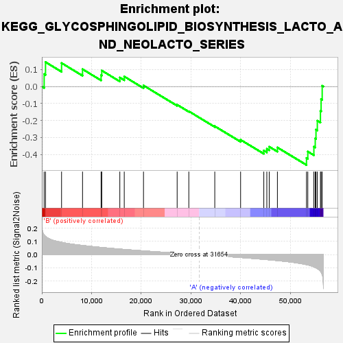

| | | Dataset | my.my.cls#B_versus_A.my.cls#B_versus_A_repos |
| Phenotype | my.cls#B_versus_A_repos |
| Upregulated in class | A |
| GeneSet | KEGG_GLYCOSPHINGOLIPID_BIOSYNTHESIS_LACTO_AND_NEOLACTO_SERIES |
| Enrichment Score (ES) | -0.46223226 |
| Normalized Enrichment Score (NES) | -1.4622167 |
| Nominal p-value | 0.07531381 |
| FDR q-value | 0.48695624 |
| FWER p-Value | 0.791 |
Table: GSEA Results Summary

Fig 1: Enrichment plot: KEGG_GLYCOSPHINGOLIPID_BIOSYNTHESIS_LACTO_AND_NEOLACTO_SERIES
Profile of the Running ES Score & Positions of GeneSet Members on the Rank Ordered List
| SYMBOL | TITLE | RANK IN GENE LIST | RANK METRIC SCORE | RUNNING ES | CORE ENRICHMENT | | 1 | ST3GAL3 | na | 462 | 0.147 | 0.0733 | No |
| 2 | B3GALT2 | na | 739 | 0.137 | 0.1441 | No |
| 3 | B4GAT1 | na | 3964 | 0.093 | 0.1384 | No |
| 4 | ST3GAL6 | na | 8183 | 0.069 | 0.1022 | No |
| 5 | B3GALT1 | na | 11914 | 0.055 | 0.0665 | No |
| 6 | FUT7 | na | 12051 | 0.054 | 0.0941 | No |
| 7 | B4GALT3 | na | 15680 | 0.042 | 0.0531 | No |
| 8 | ST3GAL4 | na | 16571 | 0.039 | 0.0590 | No |
| 9 | FUT1 | na | 20442 | 0.028 | 0.0063 | No |
| 10 | FUT5 | na | 27208 | 0.011 | -0.1072 | No |
| 11 | B3GNT2 | na | 29553 | 0.005 | -0.1458 | No |
| 12 | B4GALT2 | na | 34773 | -0.008 | -0.2338 | No |
| 13 | B4GALT4 | na | 39965 | -0.021 | -0.3138 | No |
| 14 | GCNT2 | na | 44632 | -0.035 | -0.3769 | No |
| 15 | ABO | na | 45240 | -0.037 | -0.3673 | No |
| 16 | B3GNT4 | na | 45722 | -0.039 | -0.3545 | No |
| 17 | ST8SIA1 | na | 47367 | -0.044 | -0.3590 | No |
| 18 | B3GNT5 | na | 53211 | -0.075 | -0.4208 | Yes |
| 19 | B3GNT3 | na | 53480 | -0.077 | -0.3831 | Yes |
| 20 | FUT6 | na | 54699 | -0.091 | -0.3542 | Yes |
| 21 | FUT2 | na | 54971 | -0.096 | -0.3060 | Yes |
| 22 | B4GALT1 | na | 55125 | -0.099 | -0.2541 | Yes |
| 23 | FUT4 | na | 55393 | -0.104 | -0.2011 | Yes |
| 24 | B3GALT5 | na | 56019 | -0.124 | -0.1438 | Yes |
| 25 | FUT3 | na | 56153 | -0.131 | -0.0739 | Yes |
| 26 | FUT9 | na | 56371 | -0.149 | 0.0044 | Yes |
Table: GSEA details [plain text format]
Fig 2: KEGG_GLYCOSPHINGOLIPID_BIOSYNTHESIS_LACTO_AND_NEOLACTO_SERIES
Blue-Pink O' Gram in the Space of the Analyzed GeneSet
 Fig 3: KEGG_GLYCOSPHINGOLIPID_BIOSYNTHESIS_LACTO_AND_NEOLACTO_SERIES: Random ES distribution
Fig 3: KEGG_GLYCOSPHINGOLIPID_BIOSYNTHESIS_LACTO_AND_NEOLACTO_SERIES: Random ES distribution
Gene set null distribution of ES for KEGG_GLYCOSPHINGOLIPID_BIOSYNTHESIS_LACTO_AND_NEOLACTO_SERIES